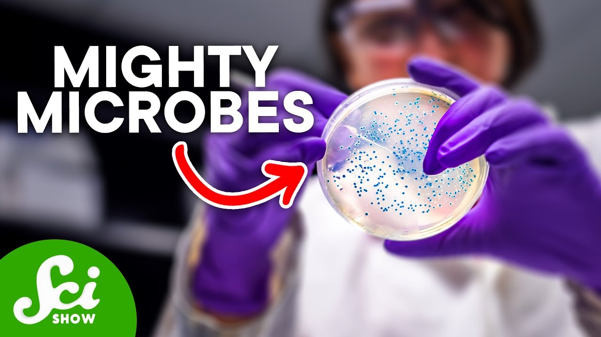

Featured Microbiome Videos
Introduction to the Human Microbiome
Explore the fascinating world of the trillions of microorganisms that call our bodies home.
Watch NowThe Gut Microbiome and Digestive Health
Learn how the gut microbiome plays a crucial role in maintaining a healthy digestive system.
Watch Now

What Your Microbiome Does For Your Body
Discover the important functions that the microbiome performs to keep you healthy.
Watch Now